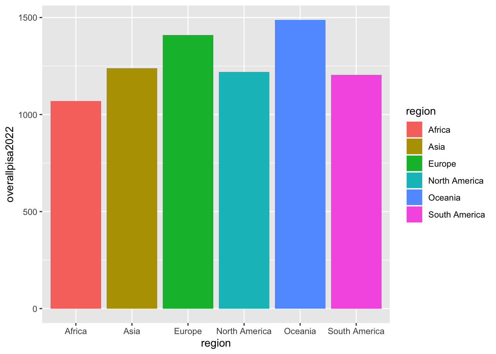
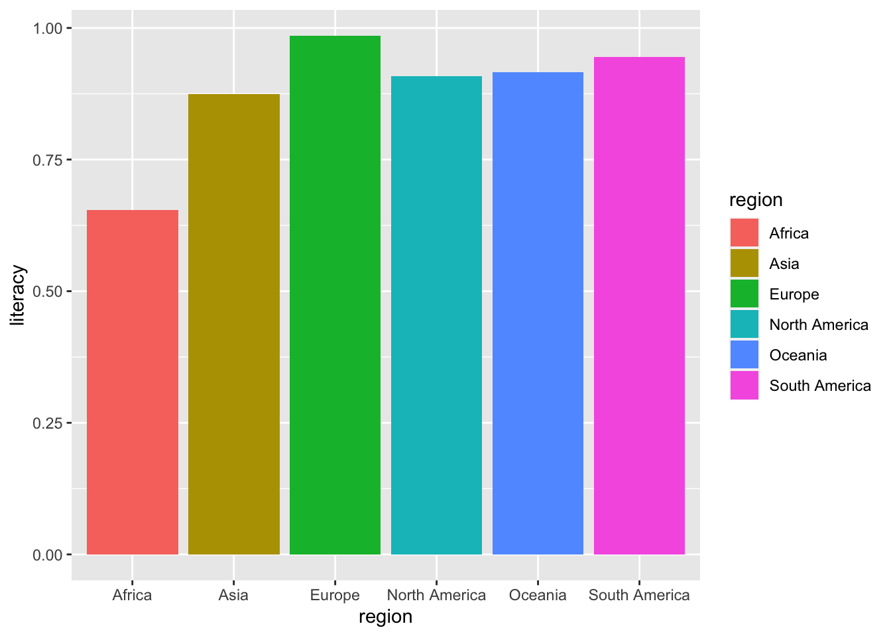

Rows: 212969 Columns: 86
── Column specification ────────────────────────────────────────────────────────
Delimiter: ","
chr (14): iso_code, region_group, income_group, country, survey, level, cate...
dbl (72): year, grade, comp_prim_v2_m, comp_lowsec_v2_m, comp_upsec_v2_m, co...
ℹ Use `spec()` to retrieve the full column specification for this data.
ℹ Specify the column types or set `show_col_types = FALSE` to quiet this message.
Rows: 249 Columns: 11
── Column specification ────────────────────────────────────────────────────────
Delimiter: ","
chr (7): name, alpha-2, alpha-3, iso_3166-2, region, sub-region, intermediat...
dbl (4): country-code, region-code, sub-region-code, intermediate-region-code
ℹ Use `spec()` to retrieve the full column specification for this data.
ℹ Specify the column types or set `show_col_types = FALSE` to quiet this message.
Rows: 81 Columns: 6
── Column specification ────────────────────────────────────────────────────────
Delimiter: ","
chr (1): country
dbl (5): OverallPisaScore2022, PISAScoresMathScore2022, PISAScoresScienceSco...
ℹ Use `spec()` to retrieve the full column specification for this data.
ℹ Specify the column types or set `show_col_types = FALSE` to quiet this message.
Rows: 4955 Columns: 7
── Column specification ────────────────────────────────────────────────────────
Delimiter: ","
chr (4): Region, Country, Age, Gender
dbl (3): index, Year, Literacy rate
ℹ Use `spec()` to retrieve the full column specification for this data.
ℹ Specify the column types or set `show_col_types = FALSE` to quiet this message.Analysis
Here we provide a detailed analysis using more sophisticated statistics techniques.

Section 1: Analysis of Education Statistics
Driven by the increasing interest in global education disparities, our team has decided to explore the educational landscape across various countries around the world. Education is a cornerstone of societal development, and by examining comprehensive datasets (please see the data tab to read more about our datasets), we aim to uncover the factors that contribute to education outcomes and identify disparities that may hinder equitable access to quality education. Our project seeks to provide insights that not can potentially inform policymakers, educators, and stakeholders about the key elements influencing educational success.
Our project begins with section 1, where we will identify educational trends by the continent and attempt to answer why these country’s are the way they are.
In section 2, we will model our data with a linear regression model and uncover insights that are harder to identify on the surface
Section 1.1: PISA Scores and Literacy Rates
The first step to understanding economic disparties is to get a general understanding of what parts of the world generally tend to have better education than others. There are multiple ways of measuring this, but reliable way to measure this is with PISA scores and literacy rates. Both of these metrics serve as standardized bench marks for the whole world!


Warning: Returning more (or less) than 1 row per `summarise()` group was deprecated in
dplyr 1.1.0.
ℹ Please use `reframe()` instead.
ℹ When switching from `summarise()` to `reframe()`, remember that `reframe()`
always returns an ungrouped data frame and adjust accordingly.`summarise()` has grouped output by 'country'. You can override using the
`.groups` argument.
It is clear that in terms of PISA scores, Oceania and Europe perform the best, while Africa performed the worst, and in terms of literacy rate, all of the continents performed relatively equally while Africa performed the worst again. Now that you have a general understanding of where education is better and where education is worse, we can now get into more specific statistics.
Section 1.2: Percentage of People who did not Complete Primary School
The next step of analyzing education around the world was to simply look at the percentage of (i) children and young people aged 3-5 years above primary school graduation age and (ii) young people aged 15-24, who have completed primary school.
`summarise()` has grouped output by 'region'. You can override using the
`.groups` argument.Warning: Removed 9 rows containing missing values (`geom_line()`).
`summarise()` has grouped output by 'region'. You can override using the
`.groups` argument.Warning: Removed 27 rows containing missing values (`geom_line()`).
As you can see, Europe (while it has a lot of missing data), consistently ranks significantly higher than all of the other continents, while North America, South America, and Asia rank below Europe but higher than Africa.

Warning: Removed 3 rows containing missing values (`position_stack()`).
As you can see, when looking at the % of people who finish primary school, the percentages are significantly lower for the sub-saharan African countries compared to the Northern African countries. It seems like Sub-Saharan Africa may be the reason Africa shows up so low in many of the plots in the first section. In fact, Northern Africa seems to be on par in terms of primary school completion rate when compared to the rest of the continents in the world, but Sub-Sahara Africa does not seem to be on par. This difference in regions suggests that much attention should actually be directed towards Sub-Saharan Africa rather than Africa as a whole.
The good news is that all countries seem to have a slow yet steady increase in their primary school completion rate which is great to see.
The next step is to analyze the mean years of education of each region
Section 1.3: Mean Years of Education
Section 1.4: Rural vs Urban
`summarise()` has grouped output by 'region'. You can override using the
`.groups` argument.Warning: Removed 2 rows containing missing values (`position_stack()`).
This suggests that education should be focused more on Rural areas rather than non-rural areas
Section 1.5: Male vs. Female
`summarise()` has grouped output by 'sub_region'. You can override using the
`.groups` argument.Warning: Removed 9 rows containing missing values (`position_stack()`).Warning: Position guide is perpendicular to the intended axis
ℹ Did you mean to specify a different guide `position`?
Position guide is perpendicular to the intended axis
ℹ Did you mean to specify a different guide `position`?
Position guide is perpendicular to the intended axis
ℹ Did you mean to specify a different guide `position`?
Relatively even except for Africa where the males get more education. Surprisnly, females get more education except for in Africa.
Section 2: Modeling
parsnip model object
Call:
stats::lm(formula = mean_primary_completion_rate ~ mean_educ_years_20_24,
data = data)
Coefficients:
(Intercept) mean_educ_years_20_24
0.12733 0.07119 Length Class Mode
lvl 0 -none- NULL
spec 7 linear_reg list
fit 13 lm list
preproc 1 -none- list
elapsed 1 -none- list
censor_probs 0 -none- list# A tibble: 1 × 12
r.squared adj.r.squared sigma statistic p.value df logLik AIC BIC
<dbl> <dbl> <dbl> <dbl> <dbl> <dbl> <dbl> <dbl> <dbl>
1 0.730 0.727 0.128 233. 3.54e-26 1 56.8 -108. -100.
# ℹ 3 more variables: deviance <dbl>, df.residual <int>, nobs <int># A tibble: 177 × 7
.pred .resid iso_code mean_primary_completion_rate mean_educ_years_20_24
<dbl> <dbl> <chr> <dbl> <dbl>
1 0.451 0.0594 AFG 0.510 4.55
2 0.579 -0.0591 AGO 0.519 6.34
3 0.867 0.107 ALB 0.974 10.4
4 NaN NaN ARE NaN NaN
5 0.939 0.0237 ARG 0.963 11.4
6 0.895 0.0996 ARM 0.994 10.8
7 1.01 -0.0179 AUS 0.993 12.4
8 NaN NaN AUT NaN NaN
9 0.897 0.0790 AZE 0.975 10.8
10 0.430 -0.0486 BDI 0.382 4.26
# ℹ 167 more rows
# ℹ 2 more variables: attend_higher_education <dbl>, count <int>`geom_smooth()` using method = 'loess' and formula = 'y ~ x'Warning: Removed 89 rows containing non-finite values (`stat_smooth()`).`geom_smooth()` using formula = 'y ~ x'Warning: Removed 89 rows containing non-finite values (`stat_smooth()`).Warning: Removed 89 rows containing missing values (`geom_point()`).